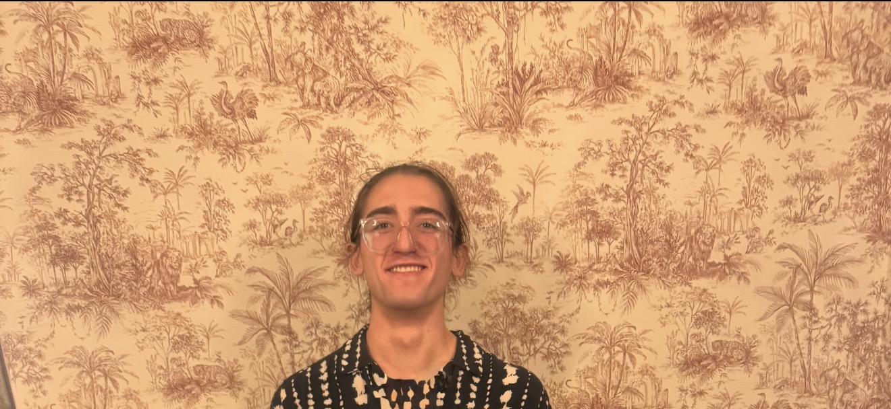

I'm a software engineer with a few internships under my belt, and have experience with mobile development (e.g. Kotlin, Swift, React) as well as embedded systems like STM's cubeIDE and cubeMX.
I'm most intrigued by the interaction between humans and my products; and I thrive in a project with a physical element that I can iteratively improve.
In my free time, I enjoy tinkering with IoT devices and 3D printing furniture!
My journey was first at Veolectra, where I evaluated various client prototypes, identifying pain points. After that, I joined Modal Motors, where I began my CreatBot conversion work. Then I moved on to another role in Modal Motors, working on the FANUC Educational Deployment in order to facilitate teach pendant->EOAT communication.
